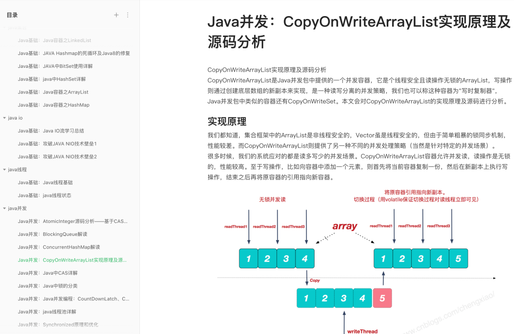

以下文章来源方志朋的博客，回复”666“获面试宝典
方志朋
号主为CSDN博客之星，博客访问量突破一千万，著有畅销书《深入理解SpringCloud与微服务构建》。主要分享Java、后端架构等技术，用大厂程序员的视角来探讨技术进阶、面试指南、职业规划等。15W技术人的选择！
公众号
来源：https://juejin.im/post/6844903701094596615
数据库中可以用datetime、bigint、timestamp来表示时间，那么选择什么类型来存储时间比较合适呢？
前期数据准备
通过程序往数据库插入50w数据
数据表：
CREATE TABLE `users` (
`id` int(11) NOT NULL AUTO_INCREMENT,
`time_date` datetime NOT NULL,
`time_timestamp` timestamp NOT NULL DEFAULT CURRENT_TIMESTAMP ON UPDATE CURRENT_TIMESTAMP,
`time_long` bigint(20) NOT NULL,
PRIMARY KEY (`id`),
KEY `time_long` (`time_long`),
KEY `time_timestamp` (`time_timestamp`),
KEY `time_date` (`time_date`)
) ENGINE=InnoDB AUTO_INCREMENT=500003 DEFAULT CHARSET=latin1
其中time_long、time_timestamp、time_date为同一时间的不同存储格式
实体类users
/**
* @author hetiantian
* @date 2018/10/21
* */
@Builder
@Data
public class Users {
/**
* 自增唯一id
* */
private Long id;
/**
* date类型的时间
* */
private Date timeDate;
/**
* timestamp类型的时间
* */
private Timestamp timeTimestamp;
/**
* long类型的时间
* */
private long timeLong;
}
dao层接口
/**
* @author hetiantian
* @date 2018/10/21
* */
@Mapper
public interface UsersMapper {
@Insert("insert into users(time_date, time_timestamp, time_long) value(#{timeDate}, #{timeTimestamp}, #{timeLong})")
@Options(useGeneratedKeys = true,keyProperty = "id",keyColumn = "id")
int saveUsers(Users users);
}
测试类往数据库插入数据
public class UsersMapperTest extends BaseTest {
@Resource
private UsersMapper usersMapper;
@Test
public void test() {
for (int i = 0; i < 500000; i++) {
long time = System.currentTimeMillis();
usersMapper.saveUsers(Users.builder().timeDate(new Date(time)).timeLong(time).timeTimestamp(new Timestamp(time)).build());
}
}
}
sql查询速率测试
通过datetime类型查询：
select count(*) from users where time_date >="2018-10-21 23:32:44" and time_date <="2018-10-21 23:41:22"
耗时：0.171
通过timestamp类型查询
select count(*) from users where time_timestamp >= "2018-10-21 23:32:44" and time_timestamp <="2018-10-21 23:41:22"
耗时：0.351
通过bigint类型查询
select count(*) from users where time_long >=1540135964091 and time_long <=1540136482372
耗时：0.130s
结论 在InnoDB存储引擎下，通过时间范围查找，性能bigint > datetime > timestamp
sql分组速率测试
使用bigint 进行分组会每条数据进行一个分组，如果将bigint做一个转化在去分组就没有比较的意义了，转化也是需要时间的
通过datetime类型分组：
select time_date, count(*) from users group by time_date
耗时：0.176s
通过timestamp类型分组：
select time_timestamp, count(*) from users group by time_timestamp
耗时：0.173s
结论 在InnoDB存储引擎下，通过时间分组，性能timestamp > datetime，但是相差不大
sql排序速率测试
通过datetime类型排序：
select * from users order by time_date
耗时：1.038s
通过timestamp类型排序
select * from users order by time_timestamp
耗时：0.933s
通过bigint类型排序
select * from users order by time_long
耗时：0.775s
结论 在InnoDB存储引擎下，通过时间排序，性能bigint > timestamp > datetime
小结
如果需要对时间字段进行操作(如通过时间范围查找或者排序等)，推荐使用bigint，如果时间字段不需要进行任何操作，推荐使用timestamp，使用4个字节保存比较节省空间，但是只能记录到2038年记录的时间有限
在这里，我为大家准备了一份2021年最新最全的《史上最简单的java面试题》，这套电子书涵盖了诸多java技术栈的面试知识题，是作者面试BAT大厂的前的总结，作者顺利拿下AT的offer，相信可以帮助大家在最短的时间内复习Java后端的大多数面试题，从而拿到自己心仪的offer。
截了张图，大家可以仔细查看左边的菜单栏，覆盖的知识面真的很广，而且质量都很不错。 
资料获取方法
扫描下方二维码
后台回复关键词：BAT
明天见(｡･ω･｡)

来源:https://mp.weixin.qq.com/s/JlHO4zDZbpWvsoCNTiHiRw


发表评论 取消回复